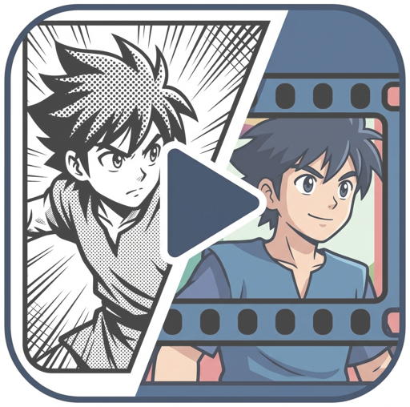

Manga2AnimateAn Agentic Framework for Faithful Manga Animation with Script and Storyboard Planning
1National Yang Ming Chiao Tung University*Equal contribution
Adapting existing manga into coherent animation that stays faithful to the source is a valuable yet challenging task. Existing methods either access the manga mainly through text, losing its characters and art style, or feed manga pages directly into video generation models, which misinterpret the manga's structure and produce incorrect storylines. In this paper, we propose Manga2Animate, a multi-agent framework that grounds every stage of generation in the source manga. We decompose the task into two intermediate representations, an animation script and a visual storyboard. Each representation is produced by a creator agent and reviewed against the source panels by a paired reviewer agent. We tailor representation-specific selection and dual-level feedback to progressively refine both before synthesizing the final animation. Extensive experiments and a user study demonstrate that Manga2Animate produces animations more faithful to the source manga and more consistent across shots than state-of-the-art approaches.
Following real animation production, Manga2Animate first writes an animation script, then draws a visual storyboard, and only then generates the video. Each step is made by a creator agent and checked against the source manga panels by a reviewer agent.
Extract ordered panels, a transcript, and character descriptions from the manga pages.
Creators and reviewers refine the script and storyboard over rounds, with dual-level feedback guiding the next round.
Generate the animation from the best script and storyboard, in first-frame or reference-conditioned mode.
@misc{manga2animate2026,
title={Manga2Animate: An Agentic Framework for Faithful Manga Animation with Script and Storyboard Planning},
author={Sheng-Wei Zhang and Hsi-An Chen and Yan-Ting Liou and Chih-Hsuan Chen and Shih-Chen Tseng and Yu-Lun Liu},
year={2026}
}